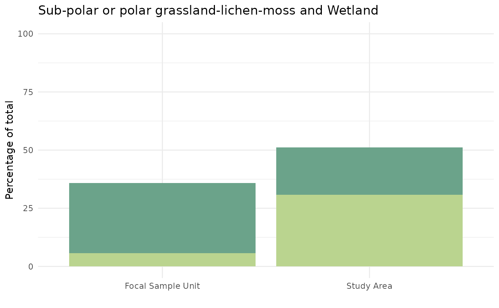
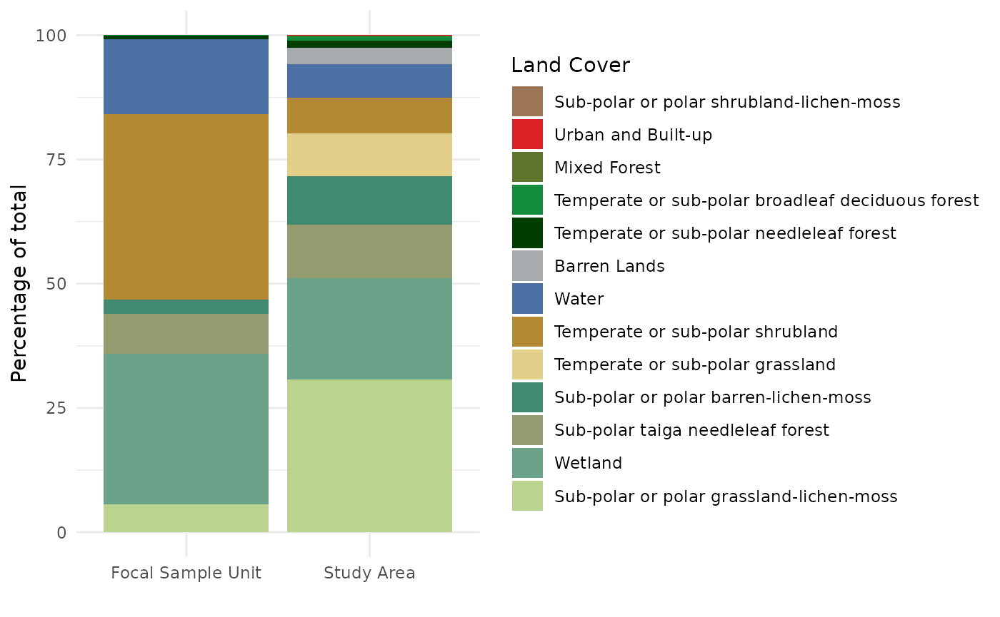
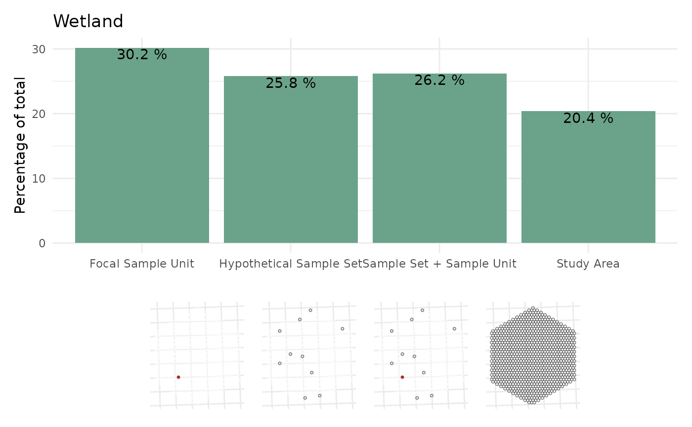
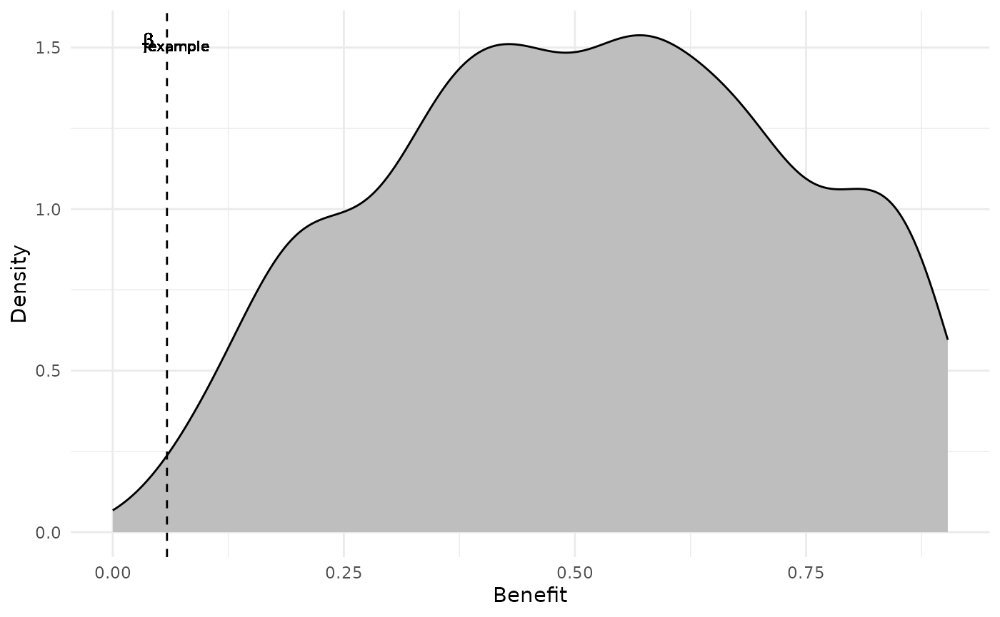

Step by Step
David Hope
2025-06-20
Source:vignettes/BASS_Benefit_Step_by_Step.Rmd
BASS_Benefit_Step_by_Step.Rmd
knitr::opts_chunk$set(
eval = T, warning = F, message = F,#cache = T,echo=F,
collapse = TRUE,
comment = "#>"
)
library(BASSr)
library(ggplot2)
library(dplyr)
library(tidyr)
library(purrr)
library(glue)
library(patchwork)
library(sf)
ont.proj <- 3161Benefit definition
The process of calculating benefit can be defined below:
1 .Calculate percentage of land cover type in:
a. Study area
()
b. Hypothetical sample set
()
c. Hypothetical sample set plus focal sample unit
()
2.Calculate difference between Study area and sample sets: a.
Calculate benefit for land cover type in sample unit with a given hypothetical sample set as:
If we consider the proportion of a land cover type as the value of
interest: If: the difference between the
value for the study area and the value for the
hypothetical sample set and the difference between the
value for the study area and the value for the
hypothetical sample set plus the focal sample unit are
either both positive or both negative then:
The benefit for a land cover type is: the difference between the
value for the hypothetical sample set and
value for the hypothetical sample set plus the focal sample
unit. otherwise: the benefit is 0.
Example work through
This is an example of how we calculate the benefit for one sample unit in a study area. The same approach applies to all other sample unit hexagons in the study area and also to calculating benefits for the study area hexagons in a region.
Step 1 - Load in data
Here you will need a simple features (package sf) layer of hexagons
for the study areas and sample units. Code to create the hexagons is
available in Hexagon Creation vignette. The first step is
to create or load both the study area and sample units.
The data for the vignette is included in the package. It should load
with the BASSr package. You’ll need the objects
ontario, clrfile, lcc2015_codes,
all_study_areas, and StudyArea_hexes.
Documentation for these objects is found by using the help function (eg
?BASSr::ontario). The raster for the example study area can
be found in the system data (see chunk raster-plot
below).
study_area_id <- "ONT_SA_0740"
SA_sum <- StudyArea_hexes$landcover %>%
as_tibble() %>%
summarize_at(.vars = vars(contains("LC")), .funs = sum) %>%
pivot_longer(cols = contains("LC"), names_to = "lc", values_to = "pHab_SA") %>%
mutate(pHab_SA = pHab_SA / sum(pHab_SA)) %>%
arrange(pHab_SA) %>%
mutate(
cHAb_SA = cumsum(pHab_SA),
lcFac = forcats::fct_reorder(lc, pHab_SA),
lc_n = as.numeric(stringr::str_extract(lc, "\\d\\d"))
) %>%
left_join(lcc2015_codes, by = c("lc_n" = "LCC_CODE")) %>%
mutate(lcc_fac = forcats::fct_reorder(LCC_NAME, pHab_SA))
set.seed(2277)
exampleHex <- slice_sample(StudyArea_hexes$landcover, n = 1)
hex_LC <-
StudyArea_hexes$landcover %>%
as_tibble() %>%
dplyr::select(-geometry) %>%
pivot_longer(cols = contains("LC"), names_to = "lc", values_to = "pHab") %>%
left_join(SA_sum, by = c("lc")) %>%
arrange(SampleUnitID, pHab_SA) %>%
group_by(SampleUnitID) %>%
mutate(cpHab = cumsum(pHab / 100)) %>%
ungroup() %>%
mutate(lc_n = as.numeric(stringr::str_extract(lc, "\\d\\d")))
exLC <- hex_LC %>% filter(SampleUnitID %in% exampleHex$SampleUnitID)
ggplot(all_study_areas) +
geom_sf(data = ontario) +
geom_sf(fill = "white") +
theme_linedraw() +
geom_sf(data = filter(all_study_areas, StudyAreaID == study_area_id), fill = "red")Figure 1. Map of Ontario study areas with example study area shown in red
The sample unit will focus on a single sample unit within the study area, shown below in red. We will call this the ‘focal sample unit’.
ggplot(exampleHex) +
geom_sf(fill = "red") +
geom_sf(data = StudyArea_hexes$landcover, fill = NA) +
theme_minimal()Figure 2. Example sample unit hexagon (in red). Used as the focal sample unit for the next steps.
Step 2 Calculate Habitat Composition
This example study area is shown below. The habitat is shown from the National Land Cover Classification 2015. The study area is 1003 sample unit hexagons of 1e+06.
r <- terra::rast(system.file("extdata", glue("{study_area_id}.tif"),
package = "BASSr", mustWork = T
)) %>%
terra::as.data.frame(xy = T) %>%
as_tibble() %>%
filter(!is.na({{study_area_id}})) %>%
left_join(lcc2015_codes, by = join_by({{study_area_id}} == LCC_CODE))
pal_ <- clrfile$rgb
names(pal_) <- (clrfile$LCC_NAME)
pal_ <- pal_[!is.na(names(pal_))]
lc <- ggplot() +
geom_raster(data = r, aes(x, y, fill = LCC_NAME)) +
ggplot2::scale_discrete_manual(aesthetics = "fill", values = pal_) +
geom_sf(data = StudyArea_hexes$landcover, fill = NA) +
labs(x = "", y = "", fill = "LCC2015") +
theme_linedraw()
lcFigure 3. The distribution of land cover classes across an example study area.
Overall, the study area is primarily classified as “Sub-polar or
polar grassland-lichen-moss” or “Wetland”, however there are
n_distinct(exLC$lc) classes in the study area.
exLC %>%
dplyr::select(lcc_fac, pHab_SA) %>%
mutate(pHab_SA = pHab_SA * 100) %>%
pivot_longer(names_to = "sampletype_s", values_to = "phabitat", cols = c("pHab_SA")) %>%
mutate(sampletype = ifelse(sampletype_s == "pHab", "Example Sample Unit", "Study Area")) %>%
ggplot(aes(sampletype, phabitat, fill = lcc_fac)) +
geom_bar(stat = "identity", position = "dodge") +
labs(x = "", y = "Percentage of total", fill = "Land Cover") +
theme_minimal() +
scale_fill_manual(values = pal_)Figure 4. The distribution of National Land Cover Classes within example Study Area
There is variation in the composition of land cover classes among sample units. If we examine the increasing cumulative proportion of a sample unit hexagon covered by a given land cover type, we see a lot of variation in this distribution between the 1003 hexagons. The focal sample unit is shown in red below.
ggplot(hex_LC, aes(lcc_fac, cpHab, group = SampleUnitID)) +
geom_step(
colour = "grey",
alpha = 0.1
) +
geom_step(
data = exLC,
colour = "red"
) +
geom_step(
data = SA_sum,
aes(y = cHAb_SA, group = 1),
colour = "black", linewidth = 2
) +
theme_minimal() +
labs(x = "Land Cover Class (Increasing freq from left to right)", y = "Cumulative proportion of hexagon") +
theme(axis.text.x = element_text(
family = "mono",
angle = 75, vjust = 1, hjust = 1
))Figure 5. The cumulative proportion of land cover classes within sample hexagons (grey) and the study area (black). The red line shows the example hexagon used in the initial benefit calculation.
Step 3 Sample unit hexagons - benefit calculation
A. - Select a sample unit to calculate benefit for
Lets focus on one sample unit hexagon for now. It is shown in Figure 2 and 5 and with the land cover below (Figure 6). As mentioned above, we will call it the focal sample unit for now.
r2 <- r %>% filter(x < st_bbox(exampleHex)[[3]] & x > st_bbox(exampleHex)[[1]] & y < st_bbox(exampleHex)[[4]] & y > st_bbox(exampleHex)[[2]])
ggplot() +
geom_raster(data = r2, aes(x, y, fill = LCC_NAME)) +
ggplot2::scale_discrete_manual(aesthetics = "fill", values = pal_) +
labs(x = "", y = "", fill = "LCC2015") +
theme_linedraw() +
# ggspatial::annotation_scale(location = "bl", width_hint = 0.4) +
geom_sf(data = exampleHex, fill = NA, colour = "red", size = 2) +
theme(legend.position = "none") +
coord_sf(xlim = st_bbox(exampleHex)[c(1, 3)], ylim = st_bbox(exampleHex)[c(2, 4)])Figure 6. Example sample unit hexagon (in outline). Used as the focal sample unit for the next steps. See Figure 3 for legend.
The focal sample unit varies in many ways from the study area. If we compare the ‘focal sample unit’ proportion of “Sub-polar or polar grassland-lichen-moss” to that found throughout the study area we can see the focal sample unit has a much lower percentage than the study area.
exLC %>%
dplyr::select(lcc_fac, pHab, pHab_SA) %>%
mutate(pHab_SA = pHab_SA * 100) %>%
pivot_longer(names_to = "sampletype_s", values_to = "phabitat", cols = c("pHab_SA", "pHab")) %>%
mutate(sampletype = ifelse(sampletype_s == "pHab", "Focal Sample Unit", "Study Area")) %>%
filter(grepl("grassland-lichen-moss", lcc_fac)) %>%
ggplot(aes(sampletype, phabitat, fill = lcc_fac)) +
geom_bar(stat = "identity") +
labs(x = "", y = "Percentage of total", fill = "Land Cover", title = exLC$LCC_NAME[grepl("grassland-lichen-moss", exLC$LCC_NAME)]) +
theme_minimal() +
theme(legend.position = "none") +
scale_fill_manual(values = pal_) +
lims(y = c(0, 100))
exLC %>%
dplyr::select(lcc_fac, pHab, pHab_SA) %>%
mutate(pHab_SA = pHab_SA * 100) %>%
pivot_longer(names_to = "sampletype_s", values_to = "phabitat", cols = c("pHab_SA", "pHab")) %>%
mutate(sampletype = ifelse(sampletype_s == "pHab", "Focal Sample Unit", "Study Area")) %>%
filter(grepl("grassland-lichen-moss|Wetland", lcc_fac)) %>%
ggplot(aes(sampletype, phabitat, fill = lcc_fac)) +
geom_bar(stat = "identity") +
labs(
x = "", y = "Percentage of total", fill = "Land Cover",
title = glue::glue("{exLC$LCC_NAME[grepl('grassland-lichen-moss',exLC$LCC_NAME)]} and Wetland")
) +
theme_minimal() +
theme(legend.position = "none") +
scale_fill_manual(values = pal_) +
lims(y = c(0, 100))
exLC %>%
dplyr::select(lcc_fac, pHab, pHab_SA) %>%
mutate(pHab_SA = pHab_SA * 100) %>%
pivot_longer(names_to = "sampletype_s", values_to = "phabitat", cols = c("pHab_SA", "pHab")) %>%
mutate(sampletype = ifelse(sampletype_s == "pHab", "Focal Sample Unit", "Study Area")) %>%
ggplot(aes(sampletype, phabitat, fill = lcc_fac)) +
geom_bar(stat = "identity") +
labs(
x = "", y = "Percentage of total",
fill = "Land Cover"
) +
theme_minimal() +
scale_fill_manual(values = pal_)
The table below compares how the percentages of land cover types differs between the example sample unit and the study area. In this example, the focal sample unit has a large proportion of “Temperate or sub-polar shrubland” relative to the study area, but the percentage of “Sub-polar or polar grassland-lichen-moss” is much lower than the study area. These differences with the study area will form the backbone of the benefit calculation for this focal sample unit.
exLC %>%
dplyr::select(lcc_fac, pHab, pHab_SA) %>%
mutate(pHab_SA = pHab_SA * 100) %>%
knitr::kable(col.names = c("Land Cover", "% Example Sample Unit", "% Example Study Area"), digits = 2)| Land Cover | % Example Sample Unit | % Example Study Area |
|---|---|---|
| Sub-polar or polar shrubland-lichen-moss | 0.00 | 0.00 |
| Urban and Built-up | 0.00 | 0.04 |
| Mixed Forest | 0.00 | 0.14 |
| Temperate or sub-polar broadleaf deciduous forest | 0.09 | 0.85 |
| Temperate or sub-polar needleleaf forest | 0.74 | 1.46 |
| Barren Lands | 0.00 | 3.29 |
| Water | 15.00 | 6.85 |
| Temperate or sub-polar shrubland | 37.31 | 7.08 |
| Temperate or sub-polar grassland | 0.00 | 8.58 |
| Sub-polar or polar barren-lichen-moss | 2.87 | 9.79 |
| Sub-polar taiga needleleaf forest | 8.15 | 10.78 |
| Wetland | 30.19 | 20.36 |
| Sub-polar or polar grassland-lichen-moss | 5.65 | 30.78 |
B. - Draw a hypothetical sample set from all sample units in study area
To examine the importance of the focal sample unit, we first draw 1 random, spatially-dispersed sample set comprised of 10 sample unit hexagons. These 10 randomly drawn sample units are defined as the hypothetical sample set. They are used to estimate how the focal sample unit will increase (or decrease) the representivity of the sample set.
sample_hexes <- BASSr::draw_random_samples(
land_hex = StudyArea_hexes$landcover,
num_runs = 1, n_samples = 10
)
sample_hexes_sf <- StudyArea_hexes$landcover %>%
dplyr::filter(SampleUnitID %in% sample_hexes$SampleUnitID)
hex_wHHS <-
ggplot(exampleHex) +
geom_sf(fill = "red") +
geom_sf(data = StudyArea_hexes$landcover, fill = NA) +
geom_sf(data = sample_hexes_sf, fill = "grey") +
theme_minimal()
hex_wHHSFigure 5. Plot of focal sample unit (red) and the hypothetical sample set (grey) within the study area (all hexagons).
sample_hexes_phab <- hex_LC %>%
filter(SampleUnitID %in% sample_hexes_sf$SampleUnitID) %>%
group_by(lcc_fac) %>%
summarize(pHab_samp = sum(pHab)) %>%
ungroup() %>%
mutate(pHab_samp = pHab_samp / sum(pHab_samp) * 100)
m2toha <- 0.0001
study_area_size <- as.numeric(sum(st_area(StudyArea_hexes$landcover))) * m2toha
hexsize <- as.numeric(st_area(exampleHex)) * m2toha
samp_com <-
left_join(exLC %>% dplyr::select(lcc_fac, pHab, pHab_SA), sample_hexes_phab) %>%
mutate(
pHab_Sample_plus_hex = 100 * ((pHab * hexsize + pHab_samp * hexsize * 10) /
(sum(pHab * hexsize) + sum(pHab_samp * hexsize * 10))),
pHab_SA = pHab_SA * 100
) %>%
dplyr::select(lcc_fac, pHab, pHab_samp, pHab_Sample_plus_hex, pHab_SA)
names(samp_com) <- c("lcFac", "Focal Sample Unit", "Hypothetical Sample Set", "Sample Set + Sample Unit", "Study Area")
d <-
samp_com %>%
pivot_longer(names_to = "sampletype", values_to = "phabitat", cols = -lcFac) %>%
mutate(sampletype = factor(sampletype, levels = c("Focal Sample Unit", "Hypothetical Sample Set", "Sample Set + Sample Unit", "Study Area")))
# c("Hexagon", "Sample", "Sample + Hex","Study Area")))
plot_single <- function(x) {
d %>%
filter(lcFac == names(pal_[x])) %>%
ggplot(aes(sampletype, phabitat)) +
geom_bar(stat = "identity", fill = pal_[x]) +
# scale_fill_viridis_d() +
# scale_fill_manual(values = pal_)+
labs(x = "", y = "Percentage of total", fill = "Land Cover", title = names(pal_[x])) +
geom_text(aes(label = glue::glue("{round(phabitat,1)} %")), position = position_nudge(y = -1)) +
theme_minimal()
}
hexplot <- function(fill_) {
ggplot(exampleHex) +
geom_sf(fill = fill_) +
theme(
panel.background = element_blank(),
axis.ticks = element_blank(),
axis.text = element_blank()
)
}
hhs_plot <-
ggplot(StudyArea_hexes$landcover) +
geom_sf(fill = NA, colour = "white") +
theme_minimal() +
theme(
axis.text = element_blank(), axis.line = element_blank(),
axis.ticks = element_blank()
)
key_row <- (hhs_plot + geom_sf(data = exampleHex, fill = "red")) +
hhs_plot + geom_sf(data = sample_hexes_sf) +
(hhs_plot + geom_sf(data = exampleHex, fill = "red") + geom_sf(data = sample_hexes_sf)) +
hhs_plot + geom_sf(fill = NA) +
plot_layout(ncol = 4)
# (hex_wHHS + theme(axis.text = element_blank())) /
(plot_single(8) / (key_row)) + plot_layout(heights = c(2, 1))Hypothetical Sample Set 9.9% less Wetland than Study Area Only 8.1% less than Study Area with inclusion of Focal Sample Unit Therefore Focal Sample Unit makes Sample Set more like Study Area Therefore Benefit! Benefit = 0.18 or 1.8%
(plot_single(14) / (key_row)) + plot_layout(heights = c(2, 1))
Hypothetical Sample Set 2.6% greater shrubland than Study Area 5.1% greater than Study Area with inclusion of Focal Sample Unit Therefore Focal Sample Unit makes Sample Set less like Study Area Therefore NO Benefit Benefit = 0
fullplot <- d %>%
ggplot(aes(sampletype, phabitat, fill = lcFac)) +
geom_bar(stat = "identity") +
scale_fill_manual(values = pal_) +
labs(x = "", y = "Percentage of total", fill = "Land Cover") +
theme_minimal()
(fullplot / (key_row)) + plot_layout(heights = c(2, 1))Figure 6. Distribution of land cover by focal sample unit, hypothetical sample set, hypothetical sample set plus focal sample unit and study area
The next step is to compare how the habitat representivity differs between the focal sample unit, the hypothetical sample set, the hypothetical sample set with the focal sample unit included and the study area as a whole. Here we can see that the hypothetical sample set has a larger percentage of “Sub-polar taiga needleleaf forest” than the study area, while the focal sample unit has a lower percentage than the study area. When the focal sample unit is added to the sample set, the percentage shifts downwards and closer to the percentage for the study area. The opposite is true for “Temperate or sub-polar shrubland”, where adding the focal sample unit moves the sample set plus focal sample unit away from the percentage observed at the study area. This is the fundamental measure of representivity for the focal sample unit.
knitr::kable(samp_com, digits = 2)| lcFac | Focal Sample Unit | Hypothetical Sample Set | Sample Set + Sample Unit | Study Area |
|---|---|---|---|---|
| Sub-polar or polar shrubland-lichen-moss | 0.00 | 0.00 | 0.00 | 0.00 |
| Urban and Built-up | 0.00 | 0.00 | 0.00 | 0.04 |
| Mixed Forest | 0.00 | 0.06 | 0.05 | 0.14 |
| Temperate or sub-polar broadleaf deciduous forest | 0.09 | 0.48 | 0.45 | 0.85 |
| Temperate or sub-polar needleleaf forest | 0.74 | 2.49 | 2.33 | 1.46 |
| Barren Lands | 0.00 | 2.19 | 1.99 | 3.29 |
| Water | 15.00 | 7.26 | 7.96 | 6.85 |
| Temperate or sub-polar shrubland | 37.31 | 5.92 | 8.78 | 7.08 |
| Temperate or sub-polar grassland | 0.00 | 8.48 | 7.71 | 8.58 |
| Sub-polar or polar barren-lichen-moss | 2.87 | 11.19 | 10.43 | 9.79 |
| Sub-polar taiga needleleaf forest | 8.15 | 7.14 | 7.23 | 10.78 |
| Wetland | 30.19 | 25.81 | 26.21 | 20.36 |
| Sub-polar or polar grassland-lichen-moss | 5.65 | 28.99 | 26.87 | 30.78 |
C. - Calculate representivity
As mentioned above, adding the focal sample unit to the sample set, shifts the habitat composition slightly and more so when the focal sample unit is quite different from the sample set. We now want to see if adding the sample unit to the hypothetical sample set will make the updated sample set more representative of the study area.
D. - Calculate benefit for sample unit
To calculate the benefit for the focal sample unit, we determine for each land cover class if including the focal sample unit to the hypothetical sample set makes the sample set more or less representative. If, for a given land cover class, the hypothetical sample set becomes more similar to the study area, the benefit is the difference between the hypothetical sample set’s representivity (here percentage of a land cover class) and the representivity if the sample unit is added into the sample set. Otherwise, the benefit for that land cover class is zero.
The benefit across all land cover types is summed to make the benefit value for that focal sample unit with that hypothetical sample set.
rep_tabl <- samp_com %>%
# mutate_at(vars(-lcFac), ~(.*study_area_size))
mutate(
`Desired Direction` = case_when(
`Study Area` > `Hypothetical Sample Set` ~ "Positive",
`Study Area` < `Hypothetical Sample Set` ~ "Negative",
`Study Area` == `Hypothetical Sample Set` ~ "None"
),
`Observed Direction` = case_when(
`Sample Set + Sample Unit` > `Hypothetical Sample Set` ~ "Positive",
`Sample Set + Sample Unit` < `Hypothetical Sample Set` ~ "Negative",
`Sample Set + Sample Unit` == `Hypothetical Sample Set` ~ "None"
),
`Land Cover Benefit` = case_when(
`Observed Direction` == "None" ~ "No Benefit",
`Desired Direction` == `Observed Direction` ~ "Benefit",
TRUE ~ "No Benefit"
),
benefit = case_when(
`Land Cover Benefit` == "Benefit" ~ abs(`Hypothetical Sample Set` - `Sample Set + Sample Unit`) / 100,
TRUE ~ 0
)
) %>%
mutate(Benefit = ifelse(benefit == 0, "0", ifelse(benefit < 0.001, "<0.001", as.character(round(benefit, 3)))))
knitr::kable(rep_tabl %>%
dplyr::select(-benefit), digits = 2)| lcFac | Focal Sample Unit | Hypothetical Sample Set | Sample Set + Sample Unit | Study Area | Desired Direction | Observed Direction | Land Cover Benefit | Benefit |
|---|---|---|---|---|---|---|---|---|
| Sub-polar or polar shrubland-lichen-moss | 0.00 | 0.00 | 0.00 | 0.00 | Positive | None | No Benefit | 0 |
| Urban and Built-up | 0.00 | 0.00 | 0.00 | 0.04 | Positive | None | No Benefit | 0 |
| Mixed Forest | 0.00 | 0.06 | 0.05 | 0.14 | Positive | Negative | No Benefit | 0 |
| Temperate or sub-polar broadleaf deciduous forest | 0.09 | 0.48 | 0.45 | 0.85 | Positive | Negative | No Benefit | 0 |
| Temperate or sub-polar needleleaf forest | 0.74 | 2.49 | 2.33 | 1.46 | Negative | Negative | Benefit | 0.002 |
| Barren Lands | 0.00 | 2.19 | 1.99 | 3.29 | Positive | Negative | No Benefit | 0 |
| Water | 15.00 | 7.26 | 7.96 | 6.85 | Negative | Positive | No Benefit | 0 |
| Temperate or sub-polar shrubland | 37.31 | 5.92 | 8.78 | 7.08 | Positive | Positive | Benefit | 0.029 |
| Temperate or sub-polar grassland | 0.00 | 8.48 | 7.71 | 8.58 | Positive | Negative | No Benefit | 0 |
| Sub-polar or polar barren-lichen-moss | 2.87 | 11.19 | 10.43 | 9.79 | Negative | Negative | Benefit | 0.008 |
| Sub-polar taiga needleleaf forest | 8.15 | 7.14 | 7.23 | 10.78 | Positive | Positive | Benefit | <0.001 |
| Wetland | 30.19 | 25.81 | 26.21 | 20.36 | Negative | Positive | No Benefit | 0 |
| Sub-polar or polar grassland-lichen-moss | 5.65 | 28.99 | 26.87 | 30.78 | Positive | Negative | No Benefit | 0 |
In the table above, there are only 5 land cover types with a benefit (Urban and Built-up,Temperate or sub-polar needleleaf forest, Wetland, Sub-polar or polar grasslandlichen-moss, and Sub-polar taiga needleleaf forest). As mentioned above “Temperate or sub-polar shrubland” moves the hypothetical sample set away from the study area percentage. However for “Sub-polar taiga needleleaf” the focal sample unit’s low percentage is a benefit because it moves the hypothetical sample set percentage lower and closer to the study area’s percent.
The benefit for the focal sample unit with this hypothetical sample unit is 0.039. However, as we only sampled 10 sample units for the hypothetical sample set, we may not have an accurate picture of the benefit of this focal sample unit.
E. Repeat multiple times
To get a more useful measure of benefit, we calculate the benefit from this focal sample unit across 200 randomly drawn hypothetical sample sets.
# landcover_ha <- StudyArea_hexes$landcover %>%
# mutate_at(.vars = vars(contains("LC")),.funs = ~(.*area)) %>% ungroup
# att.long <- BASSr::prepare_hab_long(as_tibble(landcover_ha))
# set.seed(1234)
sample_hexes200 <- BASSr::draw_random_samples( # att_cleaned = as_tibble(landcover_ha),
land_hex = StudyArea_hexes$landcover, use_grts = F,
num_runs = 200, n_samples = 10
)
multi_ex <- BASSr::calculate_benefit(
samples = sample_hexes200, #|>
# mutate_at(.vars = vars(contains("LC")),.funs = ~(.*hexsize)) ,
hex_id = SampleUnitID,
land_hex = StudyArea_hexes$landcover
) |>
# exampleHex%>% #as_tibble %>%
# mutate_at(.vars = vars(contains("LC")),.funs = ~(.*hexsize)) ) |>
filter(SampleUnitID == exampleHex$SampleUnitID)
BASSr:::prepare_hab_long(
StudyArea_hexes$landcover |> select(-area)
# mutate_at(.vars = vars(contains("LC")),.funs = ~(.*hexsize))
) |>
dplyr::select("lc", "area_total") %>%
dplyr::distinct() %>%
dplyr::rename("area" = "area_total") |>
arrange(lc)
#> # A tibble: 13 × 2
#> lc area
#> <chr> <dbl>
#> 1 LC01 1469.
#> 2 LC02 10808.
#> 3 LC05 856.
#> 4 LC06 139.
#> 5 LC08 7096.
#> 6 LC10 8603.
#> 7 LC11 0.370
#> 8 LC12 30873.
#> 9 LC13 9823.
#> 10 LC14 20424.
#> 11 LC16 3298.
#> 12 LC17 41.4
#> 13 LC18 6871.
SA_sum %>%
mutate(ha = pHab_SA * study_area_size) |>
select(lc, ha) |>
arrange(lc)
#> # A tibble: 13 × 2
#> lc ha
#> <chr> <dbl>
#> 1 LC01 1469.
#> 2 LC02 10808.
#> 3 LC05 856.
#> 4 LC06 139.
#> 5 LC08 7096.
#> 6 LC10 8603.
#> 7 LC11 0.370
#> 8 LC12 30873.
#> 9 LC13 9823.
#> 10 LC14 20424.
#> 11 LC16 3298.
#> 12 LC17 41.4
#> 13 LC18 6871.
multi_exbroken <- purrr::map_df(
1:200,
~ BASSr:::quick_ben(
d = exampleHex, # %>% as_tibble %>%
# dplyr::select(-geometry) %>%
# mutate_at(.vars = vars(contains("LC")),
# .funs = ~(.*hexsize)),
samples = sample_hexes200 %>%
st_drop_geometry() |>
filter(run == .x) %>%
summarize_at(.vars = vars(contains("LC")), .funs = ~ sum(.)),
land_cover_summary = SA_sum %>% mutate(area = pHab_SA * study_area_size),
hex_id = SampleUnitID, print = F
)
)
ggplot(multi_exbroken, aes(benefit)) +
geom_density(fill = "grey") +
geom_vline(xintercept = multi_ex$benefit, linetype = 2) +
theme_minimal() +
labs(x = "Benefit of Example Sample Unit", y = "Density") +
# xlim(0, 0.15) +
geom_text(aes(x = multi_ex$benefit + 0.01, y = 1), label = "bar(beta)[j]", parse = T)Figure 7. Example focal sample unit benefit, calculated using 200 randomly drawn hypothetical sample sets. Mean benefit is shown in the vertical dotted line.
The there is quite a large variation in the benefit calculated across all sample set iterations. Our final measure of benefit for the focal sample unit is 0.059. Now, using the same 200 hypothetical sample sets used to generate Figure 7 for the example focal sample unit we will calculate the benefit using each of the other sample units in the study area as the focal sample unit.
F. Run benefit calculation for all sample units
The total benefit for the example focal sample unit based on national
land cover is shown in Figure 7 (0.059). How does this compare with
values calculated using the other sample units in the study area as the
focal sample unit ? We start by calculating the benefit for each sample
unit using the hypothetical sample set shown in
Figure 5.
one_sample <- BASSr:::quick_ben(
d = StudyArea_hexes$landcover,
samples = sample_hexes[1, ] |> st_drop_geometry(),
land_cover_summary = SA_sum %>% mutate(area = pHab_SA * study_area_size),
hex_id = SampleUnitID, print = F
)
ggplot(one_sample, aes(benefit)) +
geom_density(fill = "grey") +
geom_vline(xintercept = multi_ex$benefit, linetype = 2) +
labs(x = "Benefit", y = "Density") +
theme_minimal() +
# xlim(0, 0.15) +
geom_text(aes(x = multi_ex$benefit + 0.01, y = 1.5), label = "bar(beta)[example]", parse = T)
There is as much variation across sample units as there is within iterations of the example sample units. The example sample unit looks to be in the middle of a possibly bimodal distribution. However we have calculated this distribution across all sample units using is just one hypothetical sample set comprised of only 10 sample units. It is unlikely to be very informative on its own. As with Figure 7, we will now use the full 200 randomly drawn hypothetical sample sets.
The goal is to calculate a sample unit’s benefit multiple times with many randomly drawn hypothetical sample sets. The smaller the number of sample units in a given hypothetical sample set, the wider the distribution in benefits are likely to be across all sample units in a study area and the more variance between runs. So the size of the sample set should be small and iterations numerous.
I calculated benefit for each sample unit as the focal sample unit using 200 randomly drawn sample sets of 10 study unit hexagons. A key point is to start with hectares (or another measure of area) of land cover in your dataset rather than percent or proportion. Othwerwise, the benefit calculation will incorrectly estimate habitat representivity for the focal sample unit plus hypothetical sample set.
# set.seed(1234)
# sample_hexes2 <- BASSr::draw_random_samples(att_cleaned = as_tibble(landcover_ha),
# att.sf = st_centroid(landcover_ha),
# num_runs = 200, nsamples = 10)
benefits2 <- BASSr::calculate_benefit(
samples = sample_hexes200, #|>
hex_id = SampleUnitID,
land_hex = StudyArea_hexes$landcover
)
sample_hexes100 <- sample_hexes200[sample_hexes200$run <= 100, ]
benefits1 <- calculate_benefit(
samples = sample_hexes100, #|>
hex_id = SampleUnitID,
land_hex = StudyArea_hexes$landcover
)
ggplot(benefits2, aes(benefit)) +
geom_density(fill = "black", alpha = 1) +
geom_density(data = benefits1, fill = "grey", alpha = 0.5) +
geom_vline(
xintercept = benefits2$benefit[benefits2$SampleUnitID == exampleHex$SampleUnitID],
linetype = 2
) +
labs(x = "Benefit", y = "Density") +
theme_minimal() +
xlim(0, 0.15)Figure 9. Distribution across all sample units in a study area of the mean benefit calculated using 200 randomly drawn (with replacment; black) hypothetical sample sets or 100 hypothetical sample sets (grey), each consisting of 10 sample units. The mean benefit for the example focal sample unit described above is shown in the dotted line
Increasing the number of randomly drawn hypothetical sample sets from 100 to 200 does not drastically change the number .
Lets have a look it what a larger sample set size will look like. I next calculated the mean benefit for all sample units using 200 hypothetical sample sets with 20 samples in each hypothetical sample set.
set.seed(1234)
sample_hexes3 <- BASSr::draw_random_samples(
land_hex = StudyArea_hexes$landcover, use_grts = F,
num_runs = 200, n_samples = 20
)
benefits3 <- calculate_benefit(
samples = sample_hexes3, #|>
hex_id = SampleUnitID,
land_hex = StudyArea_hexes$landcover
)
ggplot(benefits3, aes(benefit)) +
geom_density(data = benefits2, fill = "black") +
geom_density(fill = "grey", alpha = 0.5) +
geom_vline(
xintercept = benefits3$benefit[benefits3$SampleUnitID == exampleHex$SampleUnitID],
linetype = 2
) +
labs(x = "Benefit", y = "Density") +
theme_minimal() +
xlim(0, 0.15)Figure 10. Distribution of mean benefit distribution across all sample units. Calculation of benefit completed using 200 randomly drawn hypothetical sample sets of 20 sample units each (grey distribution).This is compared with the distribution of 200 sample sets of 10 sample units each (black distribution). The mean benefit for the example hexagon with sample sets of 20 sample units is shown in the dotted line.
Calculating with hypothetical sample sets of 20 sample units instead of 10 shifts the benefits for any given sample unit lower. This occurs as the benefit of adding an individual sample unit to the sample set has to on average be smaller as the number units comprising of the hypothetical sample set plus the focal sample unit increases. The shape of distribution remains roughly the same and the example study unit hexagon in the same position with both distributions.
Represent the Study Area
After running multiple iterations of drawing hypothetical sample sets we can then show how the benefit of adding a sample unit to the draw is expected to increase representivity of the final surveyed sample units.
benefit_sf <-
ggplot(benefits2 |> st_join(x = StudyArea_hexes$landcover)) +
geom_sf(aes(fill = benefit)) +
scale_fill_viridis_c() +
theme_linedraw() +
geom_sf(data = exampleHex, fill = NA, colour = "red") #+
# ggspatial::annotation_scale(location = "bl", width_hint = 0.4)
benefit_sfFigure 11. The plotted mean benefit estimate running 200 iterations of hypothetical sample sets each of 10 sample units.
How the benefit calculation is used in BASS
The benefit for each sample unit calculated here is subsiquently used with the cost estimate for that sample unit to calculate a selection probability. If is the benefit, rescaled between 0 and 1 with 1 being the highest benefit in the study area and is the scaled cost (again between 0 and 1 with 1 being the highest cost in the study area), then selection probability is
These selection probabilities are then used in selecting the sample units to sample within that study area using the GRTS algorithm.